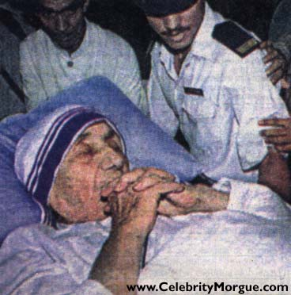

|
www.CelebrityMorgue.com
 Mother Theresa died September 5, 1997, in Calcutta, aged 87. Considered by many to be the world's only living saint, her death was overshadowed by the accident which took Princess Diana of Wales' life. India gave an unprecedented state funeral to Theresa.
Body surrounded by members of her Order of Charity.
|